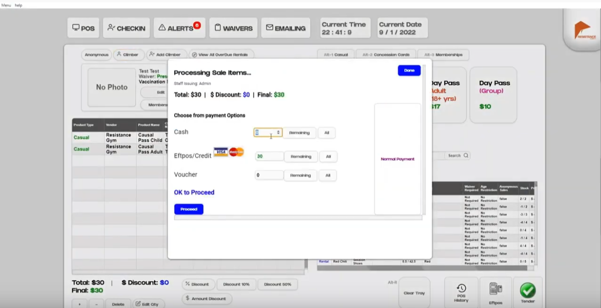
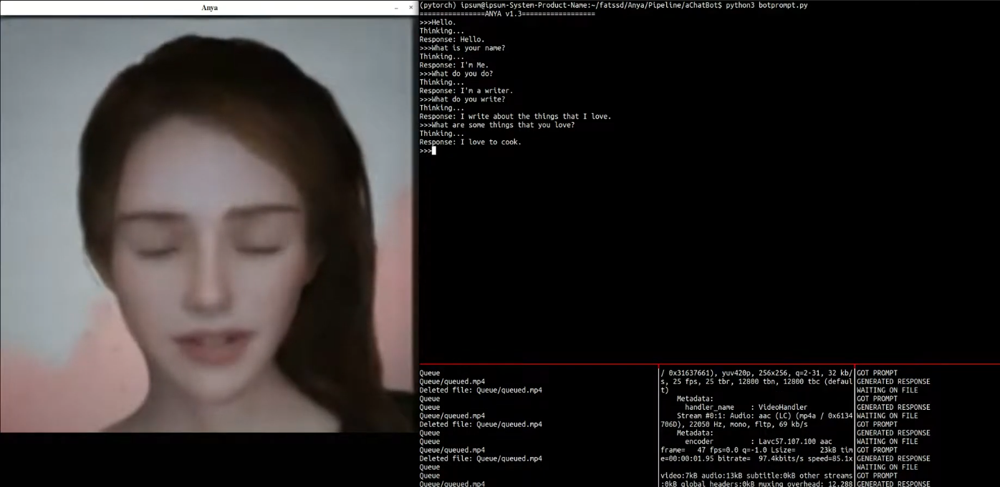
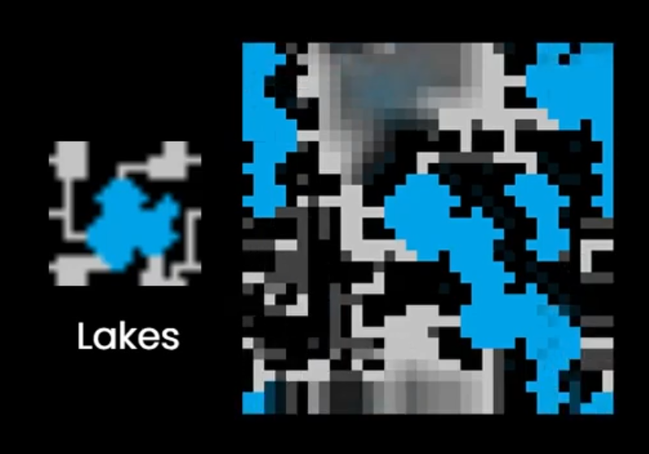
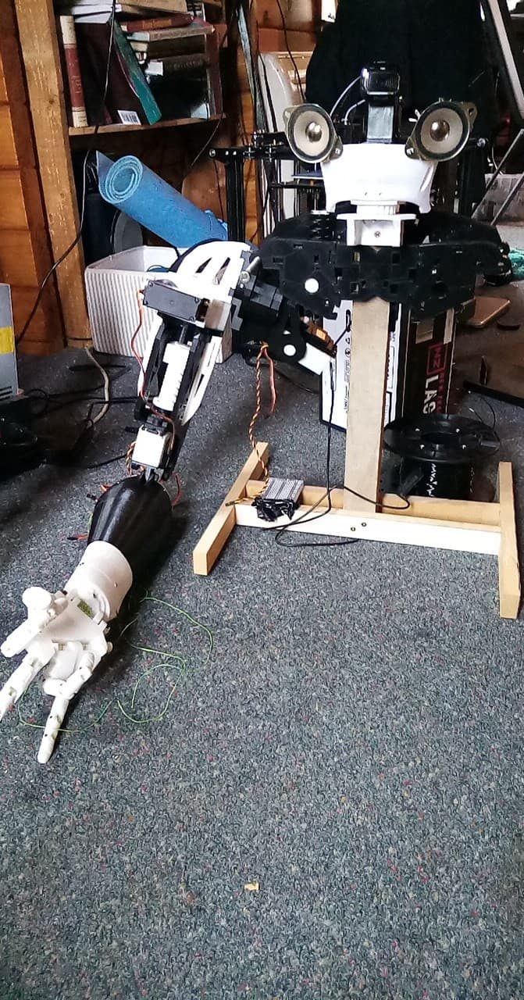
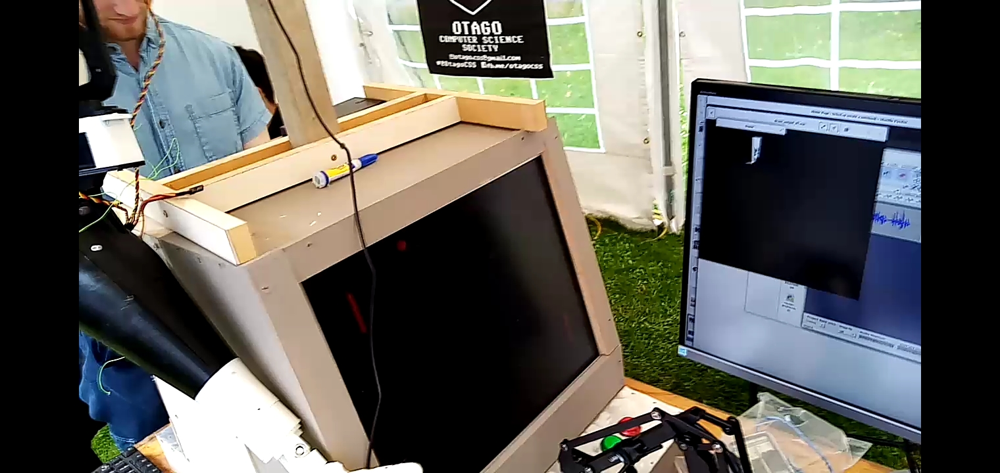
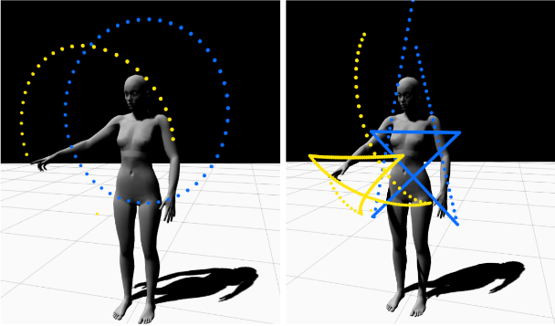
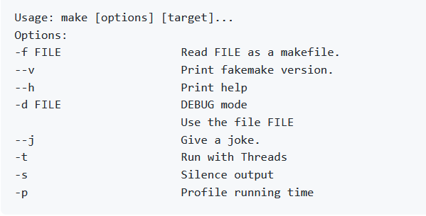
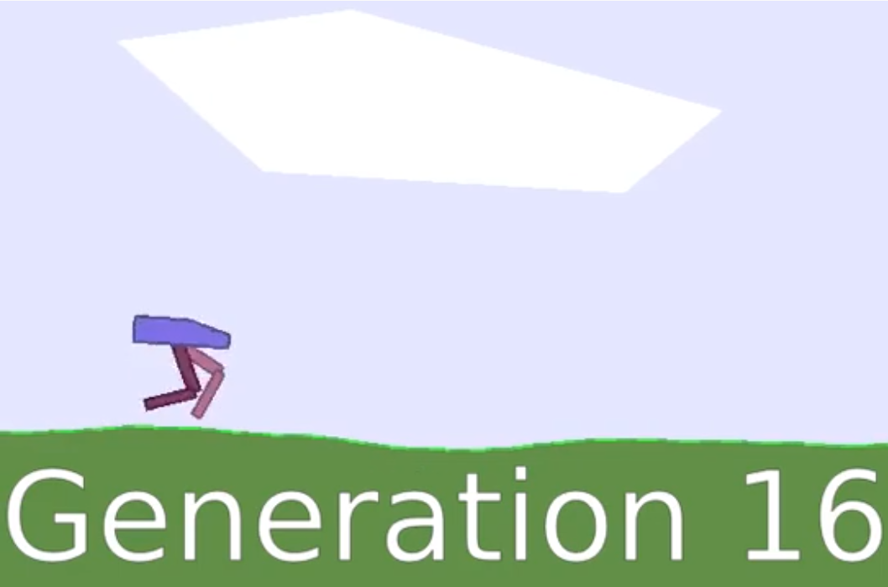
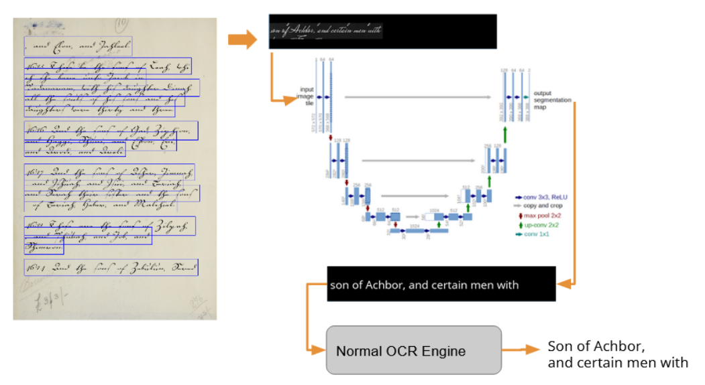

Download PDF CV
Curriculum Vitae
I am currently doing an honours year study at Auckland University, New Zealand.
I have around 4 years of programming experience.
I mostly program in Python, C++, Java, Javascript/Typescript, css/html.
My main research interest is in practical theory for deep learning.
I have 3 years of experience with developing deep learning models.
I can learn quickly and I like to develop tools to make my work efficient.
I wrote a data manipulation tool for helping a researcher study the dynamics of climate simulations.The tool was to
be used to slice some Tera bytes of data according to certain criterias so she could 'zoom in'
to different parts of the simulation to see what is going on.
This experience gave me more confidence in being able to write programs, and, in general confidence
in my own ability to learn. I also learned a bit more about how science works, and what scientists do.
I worked for a statistics consulting company as an intern working on some machine learning projects.
My first task was to adjust some data so they could be used for training machine learning models.
I was expected to do this by hand but I wrote python scripts to automate it.
I worked on paddock quality prediction from images, apple yield prediction from certain variables,
and sheep face detection.
During this time I learned to write computer programs better and had a deeper understanding of deep learning after
practical experimentations. I learnt a lot from Benoit, including the gradient boosting
technique.
I was offered to go back to work for the same company then and there for the company during the year.
I wanted some change, so I started working for a company developing web applications for a year.
During this time I worked with three other colleagues and I was mainly responsible for the 'front-end'
developments, integrating to various endpoints with the database server.
I began developing a tool to automate certain aspects of development,
essentially being able to create templates that are suited to our needs to make forms, list view pages
etc much quicker.
I was commissioned to build a full featured climbing gym management
software with Angular frame work + Flask. The software has now been used for almost one year in
Resistance Rock Climbing Gym, Dunedin, NZ. I built the software on my spare time while having a full time
internship at Soul Machines.
You can see an early demo with the software here:
In addition, there is also an online waiver signing station which accompanies the software.
This experience taught me a lot about software engineering and project management.
I worked on automatic animation of 3D human gestures at the company Soul Machines. Specifically, I created a prototype system for
automatic pointing animations. So given a target point, the skeleton would animate so to point to that point.
Initially, people had been uploading files into auto desk maya to specify and visualize trajectories. I wrote a python script
to do this automatically through TCP/IP sockets. But auto desk does not run their python scripts multi-threaded so if there was some
trouble it will freeze, and things cannot be paused mid-way. So I wrote another visualizer based on Three.js that supports
multiple skeletons asynchrnously.
In the end of my internship I worked on understanding a recent paper called "Robust Motion Inbetweening". I did not implement it myself,
but I had a solid understanding of the method and was able to modify it to our needs.
During this experience I learnt a lot on computer graphics, how artists work together with programmers to create things,
and I also gained a deeper understanding of machine learning, modeling, and deep learning in general through more practical experiments.
I was offered after the internship a 4 days a week semi full time position, but I didn't accept it, and went back to university to do
an honours year.
Portfolio
Written with Python, Typescript,CSS/HTML(Angular 9 + Electron), Open Gym is the open sourced version of a rock climbing gym software which I wrote for 'Resistance Climbing Gym',Dunedin,New Zealand.

Text driven talking avatars from one single photo. A mash up of several open source projects including Tacotron2, audio to face animation, and 'First Order Motion Model for Image Animation'.

A university group project. I did about 99% of the programming of the core algorithm. This python implementation is designed to be easy to use, modular, and 'fast'(faster than existing python implementations).

This project is incomplete. But I learned a lot about 3D printing, mechanics, motors, electronics, and etc.

This project was never finished, it was meant to be an experiment on reinforcement learning algorithms dealing with natural latency/noise. COVID 19 happened and I moved to a different house and forgot about this project.

Project done in internship. I did 90%+ of the work and lead the project. I conducted experiments,wrote several auxillary software tools, and created several solutions including with artificial neuralnetworks and tetrahedron interpolation schemes.

An university assignment for parallel computing. It is essentially a simplified Make but runs in parallel considering the make command dependencies.

Implementing NEAT based on the NEAT paper. Video demos the algorithm running on the Bipedal Walker task provided with Box2D - OpenAI Gym.

Another university project. I did 99% of all the programming, planning, theory, and lead the project, except for the bits on the Viterbi algorithm, which I did not contribute at all. The project is essentially experimenting with using an U-net structured convolutional neuralnetwork to transfer historical documents to clear text and then applying OCR to recognize it.

Testimonials
"Very quick learner. Extremely good at python."
Brendan Mccane - Head of Department - Otago Computer Science"Haven't seen a student like this..."
Mike Simpson - Co-Owner of Resistance Climbing Gym"...a very good programmer. The software is working really good."